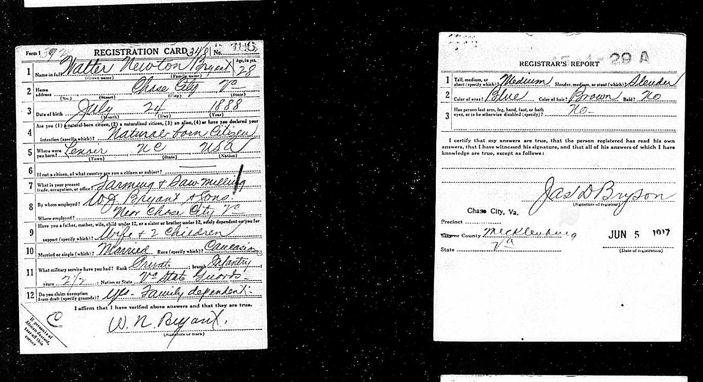
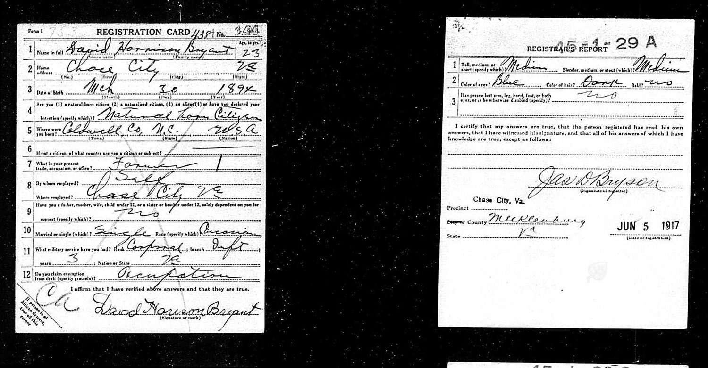
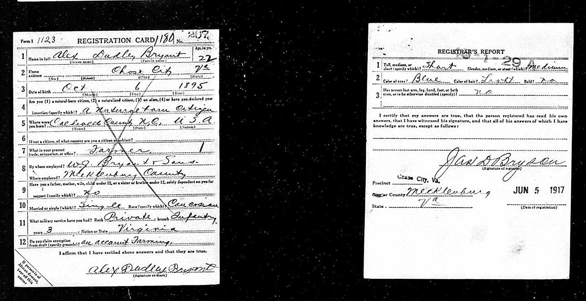

The same precinct, the same registrar, the same day. All three asked to be excused. Two went anyway.
On 5 June 1917 every American man between twenty-one and thirty-one was required to register. In Chase City the registrar was James D. Bryson, and he sat at a table in the Mecklenburg County precinct writing down answers in a steady, looping hand.
Three of the men who stood in front of him that day were brothers.

This is the part that surprised me most, and it is worth sitting with rather than passing over. Every one of the three claimed exemption. Walter because he had a wife and two children. David on occupation. Alexander wrote on account farming.
There is nothing shameful in it and nothing unusual. In June 1917 the country had been at war for two months, the draft was brand new, and the form asked the question outright — Do you claim exemption from draft (specify grounds)? Men with dependents and men producing food were expected to say so. It was a question about the national interest, not about courage.


Walter’s exemption held. He was twenty-eight with two children and a saw mill, and the war went on without him. He stayed at Chase City, and later moved west to Brookneal.
David’s did not. He was inducted on 20 September 1917 at LaCrosse, Virginia, and sent to Camp Lee. Fifteen days later he was a sergeant — which is what three years in the state troops and a corporal’s stripes will do for a man. By 10 April 1918 he was First Sergeant of Company D, 317th Infantry, the senior enlisted man in a company of two hundred and fifty.
Alexander’s did not either. He went in as a sergeant on the strength of his state service, and in July 1918 he sailed for France.